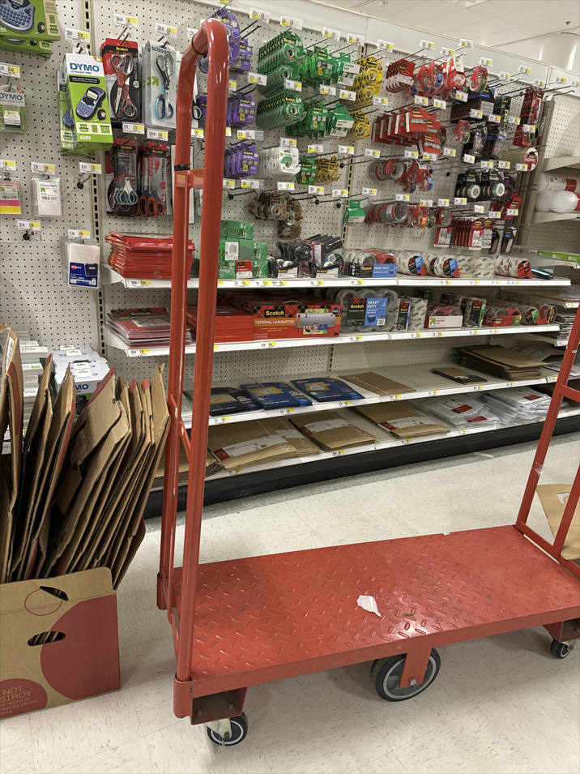
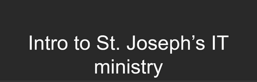
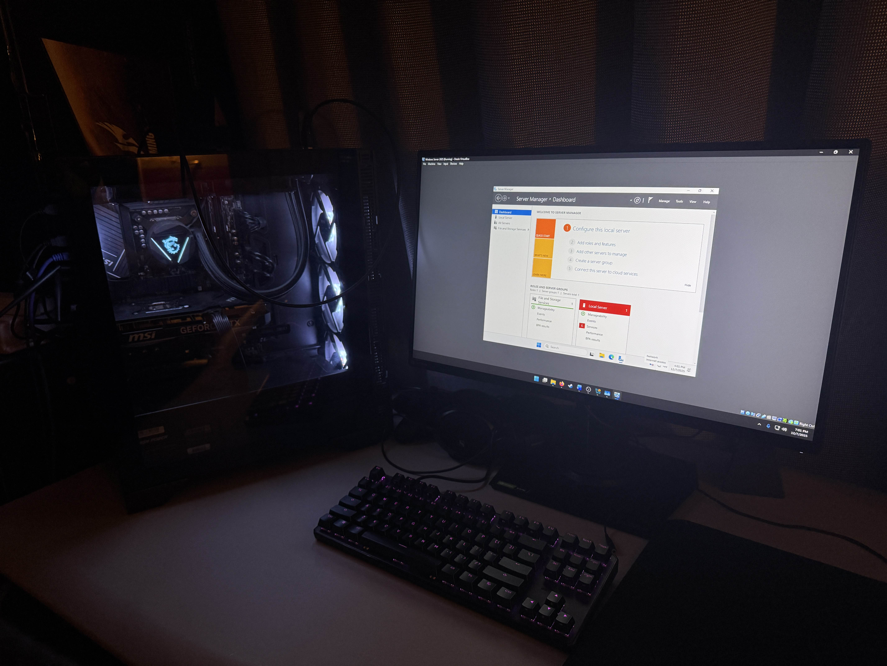
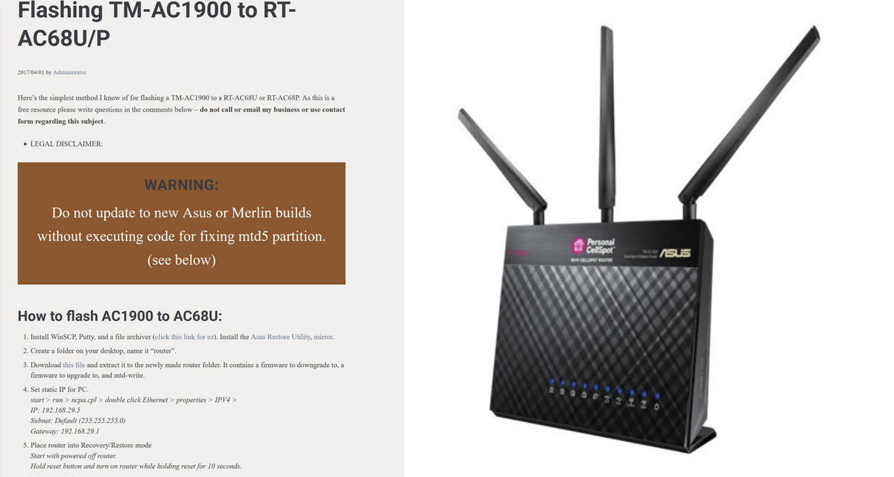

At Target, I regularly assist customers in a fast-paced environment and use de-escalation techniques to stay calm, patient, and solution-focused during difficult interactions. This experience has strengthened my communication and troubleshooting skills, which directly apply to IT Help Desk support.
I serve as an IT Support volunteer for St. Joseph Catholic Church, where I troubleshoot and resolve technical issues affecting staff and operations. This has included improving Wi-Fi connectivity across multiple buildings and deploying Windows 11 after the end-of-life for Windows 10. Additionally, I have several years of informal volunteer experience building and troubleshooting PCs for friends, which has strengthened my hands-on technical skills and diagnostic abilities.
Home Lab:
I built a home lab using VirtualBox and Windows Server 2025 to practice common administrative tasks. In this environment, I created and managed user accounts, handled password resets and account lockouts, configured folder permissions, and worked with Active Directory. This lab provides a safe space to simulate real Help Desk scenarios and build practical troubleshooting experience.
Router Conversion Project:
I converted a retired T-Mobile router into a functional ASUS router by flashing the firmware. This project helped extend the device’s lifespan, reduce electronic waste, and strengthen my understanding of networking hardware, firmware, and configuration.

Working at Target was a mix of hard labor and customer service

Did not include photo due to privacy concerns

Home lab PC with Windows Server 2025 on VirtualBox for hands-on practice

Guided project: I converted an old T-Mobile router to a usable Asus router using a PC, Ethernet cable, firmware files, and flashing tools like PuTTY and WinSCP, learning about networking hardware and firmware management in the process.